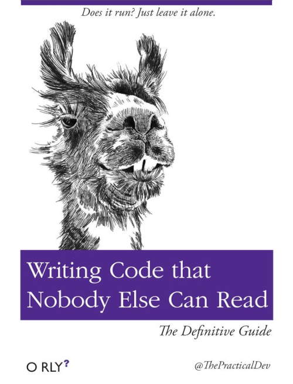

Coding
My projects
About me
I like functional programming. I like strong static typing. I like clean
code. I did something in:
- Scala (ScalaJS, Cats Effect, little bit of Akka)
- Javscript/Typescript (Vue.js, React, vanilla)
- C# (WPF, Desktop)
- PHP (CakePHP)
- Python (various)
- Java (various, some mobile games in high school)
- Kotlin (mobile)
- Ruby on rails (fuck ruby)
-
C/C++ (algorithm implementations and some shit projects for studies)
- Pascal (in primary school)
- SQL (MySQL, MSSQL, Postgres)
- HTML & CSS (xd)
- Bash
- Docker
I want to check out in the future: Rust, Clojure. And also write some more
in Haskell.
Notes
One of major aspects in programming in abstraction. Nobody could write any
complex system without abstraction of some level. And that's what
programmers are good at: finding patterns/similarities in problems that
they're encountering and generalizing them. For example we have a pretty big
set of funny anagrams like KISS, YAGNI, DRY to only name some. Here i want
to share my own realizations that I came to while coding. They can be
opaque, not complete, unorganized (as they come directly from my notes) or
just plain stupid. However maybe they will prevent me for making the same
mistakes over and over again ;)
note: some of points will refer to functional programming rather than
oop
- Golden rule: YAGNI
-
Always plan before code, even simple problems can be solved way better
when you think 1 min about them, instead of coding first solution that
came into mind. + It is good idea to first plan what you gonna code on
paper. It helps get bigger picture of what you are doing.
- YAGNI again
-
Premature optimization is the root of all evil. First make the code work
correctly, then work to make if faster, if really necessary. Profile
before optimize. note: i think its quote from somewhere
- above is also part of YAGNI
-
Aim for maximum reasonable cohesion. Ex: passing object into function
where only one field of that object is used is unnecessary, better just
pass that parameter.
-
Avoid function parameter drilling (passing parameter to function because
function inside it needs that parameter). Instead use functions as
parameters.
-
MNF (minimal necessary force) - always try to resolve current problem by
doing the least demanding thing
-
start from result that you want to achieve and use mock code to see what
preparations should you do (from abstract to implementation approach)
- dont forget about YAGNI
-
- find more than 1 lib that solves same problem and pick the best one,
dont go with "fire come first serve" approach (i hope that i got this
idiom right xd)
-
use traits (interfaces) instead of objects in function parameters to
achieve better cohesion.
-
trust yourself and dont be afraid to do crazy things, note: xd?
-
Avoid compression-oriented programming.
more about it
Quote:
Like a good compressor, I don’t reuse anything until I have at least two
instances of it occurring. Many programmers don’t understand how important
this is, and try to write “reusable” code right off the bat, but that is
probably one of the biggest mistakes you can make. My mantra is, “make
your code usable before you try to make it reusable”.
-
Wow imagine what @up refers to... it's YAGNI
-
Fuck purism. If you don't know how to do something "by the book", it's
better to do anything than nothing at all. + dont doubt -> code (things
will clarify later)
- Focus on one thing to implement. Don't do everything at once.
And most important one:
HAVE FUN WHILE CODING!

 Home
Home
 (Neo)vim
(Neo)vim
 Linux
Linux
 Coding
Coding
 Fun stuff
Fun stuff